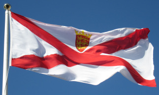

La couleu d'Jèrri, d'pis les touos vièrs temps jusqu'à mille neu chents huiptante'tch'ieune, 'tait eune rouoge Crouaix d'St. Patrice. Duthant l'année du Jubilé en mille neu chents septante-sept, L's Êtats d'Jèrri avaient décidé dé changi la couleu pa'ce qué nou criyait qu'not' vielle couleu n'tait pon distînctive assez.
Y'avait des gens tchi dithaient qu'not' couleu avait 'té copiée par mêprînse d'la couleu Irlandaise et don qu'nou dév'thait la changi. Mais i' n'y'a pon d'êvidence qu'la Crouaix d'St Patrice fûsse faite sèrvi coumme couleu en Irlande avant mille huit chents ieune, et la couleu d'Jèrri est pus vielle qué chenna, à chein qu'des expèrts vexillologiques nos dithent.
Y'a eune théorie qu'la couleu d'Jèrri date des dgèrres entre l'Angliétèrre et la France quand l's Îles d'la Manche faîthaient sèrvi lus neutralité pouor pouver faithe du conmèrce auve les deux côtés. Mais coumme tchi distîndgi les batchieaux Jèrriais? Chein qu'i' fîtent est dé touônner la Crouaix d'St. George du Rouai d'Angliétèrre pouor en faithe eune crouaix dgiagonale. Tch'est qu'ous en criyiz?
Mais St. Patrice est bein seu l'patron d'l'Île d'Eméraude. Nou dit qu'un d'ses mithacl'yes 'tait d'clièrgi les tchilieuvres hors Irlande. St. Samson en fit d'même en Dgèrnésy - mais li, il envyit ches criatuthes-là siez nous en Jèrri!
Si ch'est qu'St. Patrice nos avait env'yé sa crouaix, jé n'pouvons qu'nos pliaindre qu'i' n'nos avait pon bailli les distil'lies et brach'chies dé s'n île à li étout!
Bouonne St. Patrice! Sláinte! Santé!
Geraint Jennings
Mar 2003
Viyiz étout: